Savvy Security LLC · Threat Research
The System Was Blinking Red
Twenty-five years after 9/11, the intelligence failure that matters most to security teams isn't the one you've heard about.
September 11, 2026 · a long read, approximately 7,400 words
On August 31, a bipartisan House committee reported that America's counterintelligence posture is "eerily similar" to its pre-9/11 counterterrorism posture. This article reads that finding against the 9/11 Commission's actual record — not as history, but as a threat model. Every detection layer at Natanz… no, at Dulles, on the morning of September 11, worked. The algorithm flagged the hijackers. A ticket agent flagged them. A watchlist had already flagged them. All three were correct, and none of it stopped anything, because nothing downstream of the alert could act on what it meant.
- I. Thirty-five minutes
- II. The report Congress released eleven days ago
- III. The failure of imagination was a detection problem
- IV. The summer every alarm worked
- V. Two thousand nine hundred ninety-two alerts a day
- VI. The field was right
- VII. Forty-five contacts
- VIII. What the counterfactual actually supports
- IX. The method they published and nobody ran
- X. What the evidence says about vigilance
- XI. The month it worked
- XII. Ten principles the record will bear
- XIII. Thirty-five minutes, again
- Sources
I. Thirty-five minutes
At 9:28 on the morning of September 11, 2001, United Airlines Flight 93 was hijacked over eastern Ohio. Over the next thirty-five minutes, thirteen passengers and crew members placed thirty-seven phone calls. Thirty-five were made on Airfones mounted in the seatbacks of the last nine rows. Two, near the end, came from personal cell phones.
Those calls were not goodbyes, or not only goodbyes. They were intelligence collection.
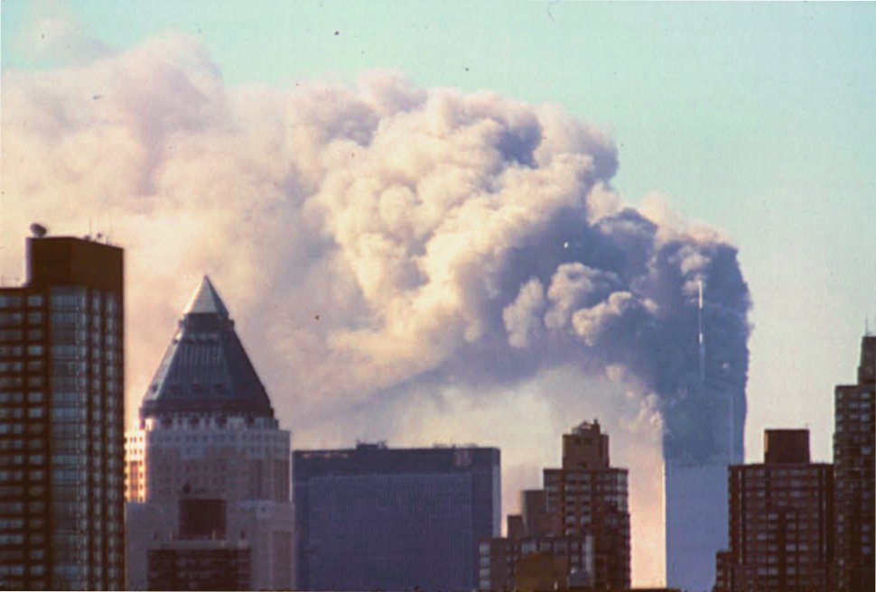
Family members watching television told the people on board that two aircraft had struck the World Trade Center and one had hit the Pentagon. A flight attendant named Sandy Bradshaw called United's Speed Dial Fix line, the number crews use to report mechanical faults, and stayed on it for nearly six minutes. Passenger by passenger, call by call, the people aboard Flight 93 assembled a picture that no one on the ground had assembled for them: that they were not hostages in a negotiation, that the aircraft was a weapon, and that compliance was fatal.
They took a vote. They built a plan. They waited until the aircraft was over rural country. At 9:57 they went. At least two passengers and one crew member hung up mid-call to join the assault. One of them ended her call this way, according to the 9/11 Commission's record: "Everyone's running up to first class. I've got to go. Bye."
The cockpit voice recorder captured Ziad Jarrah rolling and pitching the aircraft to throw them off their feet, and another hijacker shouting "Pull it down! Pull it down!" The Commission concluded that the hijackers "remained at the controls but must have judged that the passengers were only seconds from overcoming them." The plane hit a field in Somerset County, Pennsylvania at 10:03.
Meanwhile the formal system had produced nothing usable. The Northeast Air Defense Sector had nine minutes of notice on the first hijacked aircraft, no advance notice on the second, none on the third, and none on the fourth. A shootdown order existed in the sense that the President and Vice President believed they had issued one. It never reached anyone positioned to act on it in time.
Hold that comparison, because the rest of this article is about it. The centralized system, with the radar and the fighters and the legal authority, was too slow and too badly wired. The distributed system, running on two-dollar-a-minute Airfones and whatever CNN was saying in somebody's kitchen in New Jersey, correctly identified a novel attack pattern, discarded an obsolete response doctrine, built a new plan, and executed it inside half an hour.
That is not a story about heroism, though it is also that. It is the cleanest piece of evidence in the entire 9/11 record about what information sharing is actually for.
II. The report Congress released eleven days ago
On August 31, the House Permanent Select Committee on Intelligence released its bipartisan twenty-five-year review of the 9/11 Commission Report. They released it at the Flight 93 National Memorial in Shanksville.
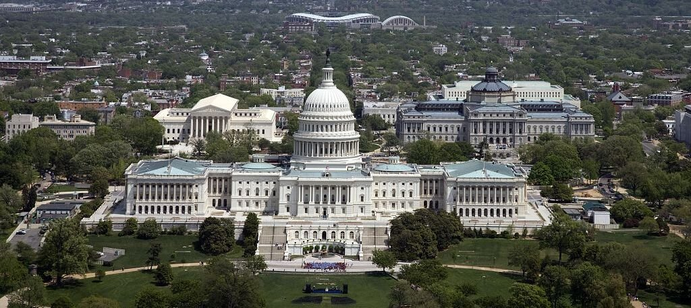
The review is largely a progress report, and much of it is positive. The National Counterterrorism Center works. The Director of National Intelligence, whatever its bureaucratic problems, was the right call. Bruce Hoffman of the Council on Foreign Relations, testifying to the committee in May, described the absence of another mass-casualty attack on American soil as "a towering achievement."
Then the report gets to counterintelligence, and the tone changes:
"The nation's current counterintelligence posture is eerily similar to the counterterrorism posture our nation had prior to 9/11. Our government must work to address these issues before it is too late."
The committee's diagnosis of why will be familiar to anyone who has sat through a quarterly security review:
"Our current counterintelligence approach is reactive rather than proactive. It focuses on identifying and prosecuting spies—or other acts of espionage or subterfuge—after the damage is done. The system measures success by incentivizing and prioritizing investigations, indictments and prosecutions, rather than proactive disruptions of adversary operations."
On specifics, the committee is blunt about dwell time. The PRC intrusion sets known as Salt Typhoon and Volt Typhoon "conducted dangerous technical penetrations of our critical infrastructure and went undetected for years by the government." SolarWinds "went undetected for a year." Nicholas Eftimiades, a Penn State Harrisburg professor and former counterintelligence officer, told a committee roundtable in June that with the FBI opening a China-related case roughly every twelve hours, the Bureau is "thousands of cases in arrears with absolutely no hope of gaining on this."
And on artificial intelligence, Benjamin Buchanan of Johns Hopkins SAIS put the parallel on the record explicitly:
"The 9/11 Commission famously concluded that the attacks revealed a failure of imagination. The government's inability to take seriously a threat that did not fit existing categories and to connect information scattered across institutional seams led to devastating strategic surprise. Twenty-five years later, AI presents, in its own way, a similar kind of challenge. The technology is advancing faster than our institutions are adapting, and the most important data points come from outside government, in private companies."
The committee also observed, in a single sentence that ought to be pinned above every CISO's desk: "The private sector is therefore no longer merely a stakeholder in security; it is often the primary target."
Chairman Rick Crawford's summary warning is the sentence that should organize how security practitioners read this anniversary: "We cannot risk waiting for the counterintelligence version of September 11th to make the reforms needed to strategically disable, disrupt, and neutralize foreign intelligence entities' activities against the U.S."
Congress, in other words, has just published a bipartisan finding that the United States is running the pre-9/11 playbook again, in a domain where the primary target is private industry. That is worth an hour of your attention even if you have read every anniversary retrospective ever written.
What follows is the part of the 9/11 record that practitioners can actually use: what failed, where it could have been interrupted, and which of those failure modes are sitting in your environment right now.
III. The failure of imagination was a detection problem
The 9/11 Commission's central finding is one of the most quoted sentences in the history of American public administration:
"We believe the 9/11 attacks revealed four kinds of failures: in imagination, policy, capabilities, and management."
And then, more sharply: "The most important failure was one of imagination. We do not believe leaders understood the gravity of the threat."
Nearly everyone who quotes this treats "failure of imagination" as poetry, a graceful way of saying nobody thought of it. The record says something much worse. People thought of it repeatedly, wrote it down, and the thought went nowhere.
In 1995, Abdul Hakim Murad, Ramzi Yousef's accomplice in the Manila air plot, told Philippine authorities he and Yousef had discussed flying a plane into CIA headquarters. In August 1998 the intelligence community received information that a group of Libyans hoped to crash a plane into the World Trade Center. In 1998 Richard Clarke ran a paper exercise in which terrorists loaded a commandeered Learjet with explosives and flew it at Washington; Pentagon officials said they could scramble fighters from Langley but would need presidential rules of engagement and there was no mechanism to get them. The Commission's note on the exercise: "There was no clear resolution of the problem."
Most damning of all, in August 1999 the FAA's own Civil Aviation Security intelligence office produced a solid assessment of the Bin Ladin hijacking threat, explicitly identified a "suicide hijacking operation" as one of the principal scenarios, and then set it aside. The stated reasoning is preserved in the Commission report: such an operation "does not offer an opportunity for dialogue to achieve the key goal of obtaining Rahman and other key captive extremists. . . . A suicide hijacking is assessed to be an option of last resort."
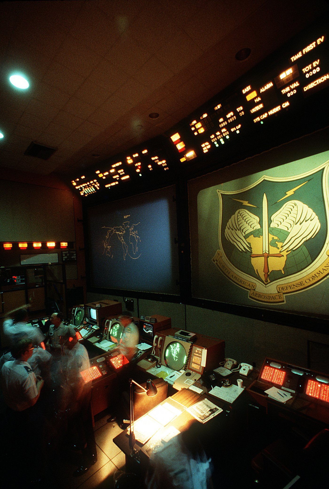
NORAD built exercises around a hijacked airliner crashing into the Pentagon and dropped the idea from planning as "too much of a distraction from the main focus (war in Korea), and as too unrealistic." A pre-9/11 FAA training CD-ROM distributed to air carriers and airport authorities raised the possibility of suicide hijackings and reassured its audience that "fortunately, we have no indication that any group is currently thinking in that direction."
Notice what actually happened in each case. The scenario was generated. It was then evaluated against an assumption about what the adversary wanted, found inconsistent with that assumption, and discarded.
That is not a failure to imagine. It is the validation of a novel threat model against a legacy model of adversary intent. Every security engineer who has ever killed an attack path in review because "no attacker would bother with that" has run the same procedure.
The governing anti-hijacking doctrine of the day, the Common Strategy, was a rational policy derived from decades of real hijackings in which the perpetrators wanted to land, make demands, and live. It was correct right up until it was catastrophically wrong. The Air Force's own historical study notes that by murdering the cockpit crews, the hijackers "rendered the government's antihijacking protocol obsolete" within minutes, and by disabling transponders made the aircraft exceedingly difficult to track.
The Commission's verdict: "Existing protocols on 9/11 were unsuited in every respect for an attack in which hijacked planes were used as weapons."
Go look at your ransomware playbook. Ask what it assumes about what the adversary wants. Then ask when you last checked whether that assumption still holds.
IV. The summer every alarm worked
The eighth chapter of the Commission report is titled "The System Was Blinking Red," a phrase from DCI George Tenet's testimony. His full assessment of late July 2001 was that it could not "get any worse."
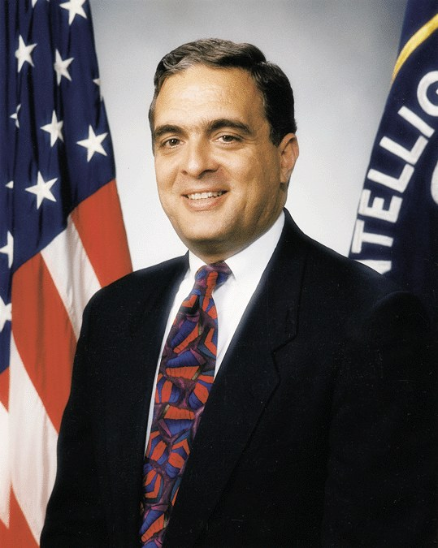
He was not exaggerating. In May, CTC chief Cofer Black told the National Security Advisor that the threat level was a seven out of ten, against an eight during the millennium. In late June a threat advisory indicated a high probability of near-term "spectacular" attacks with numerous casualties. Richard Clarke wrote on June 28 that the pattern of al Qaeda activity "had reached a crescendo"; one report warned that something "very, very, very, very" big was coming. On June 30 the briefing headline for senior officials read "Bin Ladin Planning High-Profile Attacks." On August 6 the President's Daily Brief carried the item "Bin Ladin Determined To Strike in US," the thirty-sixth PDB item that year touching Bin Ladin or al Qaeda and the first devoted to an attack inside the United States.
The warning system worked. It worked beautifully. And it produced nothing.
The Commission identified three structural reasons, and all three should be uncomfortably familiar.
The signal had no specificity. "Despite their large number, the threats received contained few specifics regarding time, place, method, or target."
The threat fell in a seam. In one of the finest paragraphs in the report: "The September 11 attacks fell into the void between the foreign and domestic threats. The foreign intelligence agencies were watching overseas, alert to foreign threats to U.S. interests there. The domestic agencies were waiting for evidence of a domestic threat from sleeper cells within the United States. No one was looking for a foreign threat to domestic targets."
Nobody told anyone what to do. "A second cause of this disparity in response is that domestic agencies did not know what to do, and no one gave them direction." Agencies operating overseas "had a 'playbook.' In contrast, the domestic agencies did not have a game plan. Neither the NSC (including the CSG) nor anyone else instructed them to create one."
At a July 5 briefing, representatives from INS, FAA, Coast Guard, Secret Service, Customs, CIA and FBI were told not to disseminate what they had just heard. An INS representative asked for a summary she could send to field offices. She never received one.
There is one more detail worth dwelling on, because it is the purest example of signal destruction in the modern intelligence record. The August 6 PDB contained the actual indicators: "patterns of suspicious activity in this country consistent with preparations for hijackings or other types of attacks, including recent surveillance of federal buildings in New York," and roughly seventy full field investigations underway. The following day's Senior Executive Intelligence Brief, distributed to a wider audience including the Attorney General, the FBI Director and Richard Clarke, carried the same title and had been stripped of all of it. No hijacking reference. No New York casing reports. No seventy investigations.
The document that reached more people contained less of what mattered. If you have ever watched a threat intelligence report get sanitized down to "elevated risk, continue monitoring" on its way to wider circulation, you have watched this exact thing happen.
The Commission's summary is the passage to take away:
"In sum, the domestic agencies never mobilized in response to the threat. They did not have direction, and did not have a plan to institute. The borders were not hardened. Transportation systems were not fortified. Electronic surveillance was not targeted against a domestic threat. State and local law enforcement were not marshaled to augment the FBI's efforts. The public was not warned."
V. Two thousand nine hundred ninety-two alerts a day
Here is the parallel, stated without decoration.
In the summer of 2001, a detection system generated an unprecedented volume of accurate, urgent, low-specificity warnings to a population of analysts who knew something terrible was coming and could not convert the volume into a single defensive action.
In 2026, according to Vectra AI's figures, the average organization receives roughly 2,992 security alerts a day. Microsoft and Omdia's State of the SOC 2026 found that 46% prove to be false positives and 42% are never properly investigated. SANS found in 2025 that 73% of security teams name false positives as their single biggest detection challenge. Cybersecurity Insiders put the share of organizations citing alert fatigue as a top SOC concern at 76%. Reported analyst burnout runs somewhere between 63% and 71% depending on whose survey you believe.
A word on those numbers: they are mostly vendor-sponsored, methodologies vary wildly, and estimates of false-positive rates across the literature range from roughly 46% to over 80%. Treat the direction as well-attested and the magnitude as contested. The peer-reviewed synthesis, if you want one, is the 2025 ACM Computing Surveys review of alert fatigue in security operations centres.
The term itself was borrowed from clinical medicine, where nurses subjected to constant monitor alarms gradually stop reacting to individual alerts, including the ones that matter. The mechanism is desensitization through sustained exposure to low-precision signals, and it does not care whether the signals are cardiac telemetry, threat advisories, or EDR detections.
There is a second, subtler parallel in the Mihdhar investigation. When the FBI finally began searching for Khalid al Mihdhar in late August 2001, the analyst who drafted the lead labeled it "Routine," a designation telling the receiving office it had thirty days to respond. The search was assigned to a single agent. It was his first counterterrorism case. On September 11, he sent a lead to Los Angeles.
That is a severity triage failure and a staffing assignment failure, and both are ordinary. The novel case, the one nobody has seen before, is routinely the one that gets scored low by rules calibrated on known patterns, and routinely the one handed to whoever has capacity. If your routing logic assigns by scored severity rather than by novelty and uncertainty, you have built the same machine.
VI. The field was right
Two people saw it. Neither could get the organization to move.
On July 10, 2001, FBI Special Agent Kenneth Williams in Phoenix sent a memo to headquarters and to two agents on New York's international terrorism squads, warning of the "possibility of a coordinated effort by Usama Bin Ladin" to send students to American civil aviation schools. His basis was the "inordinate number of individuals of investigative interest" enrolled at flight schools in Arizona. He made four concrete recommendations, including compiling a list of civil aviation schools and seeking authority to obtain visa information on applicants.
What happened to it: "His recommendations were not acted on. His memo was forwarded to one field office. Managers of the Usama Bin Ladin unit and the Radical Fundamentalist unit at FBI headquarters were addressees, but they did not even see the memo until after September 11."
Be accurate about what the memo was, because the popular version is wrong and the true version is a better argument. Williams told investigators it was not an alert about suicide pilots; his concern was closer to a Pan Am 103 scenario with explosives placed aboard. The Commission concluded that timely distribution and action would not have uncovered the plot. What it would have done, they judged, is sensitize the Bureau "so that it might have taken the Moussaoui matter more seriously the next month."
That is the real value of strategic threat intelligence, and it is why teams that discard low-confidence reporting because it isn't immediately actionable are giving up most of the return. Intelligence rarely catches the attack directly. It changes the prior probability assigned to the next signal.
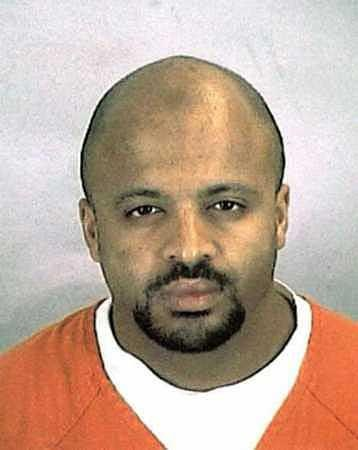
The next signal arrived on August 15, when the Minneapolis field office opened on Zacarias Moussaoui. The indicator set the case agent recorded reads like a textbook anomaly profile. He had none of the usual qualifications for Boeing 747 simulator training. He said he did not intend to become a commercial pilot and wanted the training as an "ego boosting thing." He wanted to learn to "take off and land" a 747 with almost no flight knowledge. He had $32,000 in the bank and no plausible explanation for it. He had traveled to Pakistan and became agitated when asked whether he had gone anywhere nearby. He became extremely agitated whenever questioned about his religious beliefs. He paid cash. He was interested to learn that the doors do not open in flight.
The agent's written conclusion was that Moussaoui was "an Islamic extremist preparing for some future act in furtherance of radical fundamentalist goals," and that the plan related to his flight training.
Minneapolis could not get a FISA warrant for his laptop. Headquarters judged the French-supplied link to Chechen commander Ibn al Khattab insufficient to establish agency of a foreign power, and the National Security Law Unit declined to file. In the course of that argument, a headquarters agent complained that the Minneapolis FISA request was written to get people "spun up." The Commission records what followed:
"The supervisor replied that was precisely his intent. He said he was 'trying to keep someone from taking a plane and crashing into the World Trade Center.' The headquarters agent replied that this was not going to happen and that they did not know if Moussaoui was a terrorist."
On August 23, DCI Tenet was briefed on the case under the title "Islamic Extremist Learns to Fly." He told the Commission no al Qaeda connection was apparent, and, seeing it as an FBI matter, did not raise it with the White House or the Bureau. Neither the Acting FBI Director nor the Assistant Director for Counterterrorism was briefed on Moussaoui before September 11. The acting special agent in charge of Minneapolis called headquarters supervisors on August 27 but, in the Commission's phrase, "declined to go up the chain of command."
On September 13, the British government passed along new intelligence that Moussaoui had attended an al Qaeda training camp in Afghanistan. Two days late. The Commission's assessment: "Had this information been available in late August 2001, the Moussaoui case would almost certainly have received intense, high-level attention."
There is a related artifact from the Mihdhar investigation, an email from an FBI criminal agent blocked by the wall from joining the search:
"Whatever has happened to this—someday someone will die—and wall or not—the public will not understand why we were not more effective and throwing every resource we had at certain 'problems.'"
And here is the detail that should genuinely unsettle anyone who works in a regulated environment. The Commission found that the wall, in this instance, did not apply. "It is now clear that everyone involved was confused about the rules governing the sharing and use of information gathered in intelligence channels. Because Mihdhar was being sought for his possible connection to or knowledge of the Cole bombing, he could be investigated or tracked under the existing Cole criminal case. No new criminal case was needed."
The constraint that stopped the investigation was a misunderstanding of a compliance rule, held confidently and in good faith by competent people. Count how many of your own data-sharing refusals are actual legal constraints and how many are organizational folklore that nobody has reread the policy to check.
The escalation lesson is simpler and harder. Minneapolis had a path over headquarters' head and did not use it, because using it carried a social cost and the security benefit was speculative. Until being wrong in an escalation costs a reporter nothing, visibly and repeatedly and in front of their peers, your escalation volume measures your culture rather than your threat level.
VII. Forty-five contacts
So far this has been a story about warning. Now the harder question, the one every practitioner eventually asks about every breach: at what specific points could this have been stopped, and what would have had to be true?
Two cautions before the counterfactual. The Commission was explicit about the limits: "Since the plotters were flexible and resourceful, we cannot know whether any single step or series of steps would have defeated them." Any claim that one fix would have prevented the attacks is unsupportable.
But the Commission followed that sentence immediately with a finding that is not hedged at all: "What we can say with confidence is that none of the measures adopted by the U.S. government from 1998 to 2001 disturbed or even delayed the progress of the al Qaeda plot."
That is the honest frame. Not "one control would have stopped it." Rather: across a plot that ran more than two years, involved nineteen operatives, twenty-three visa applications, and forty-five separate contacts with U.S. immigration and customs officials, zero friction was applied. Not insufficient friction. None.
Their operational security was competent, not exceptional
Security practitioners tend to assume a successful operation implies excellent operational security. The 9/11 record does not support that, and the gap between assumption and reality is where the useful lessons live.
Some of it was genuinely good. Compartmentation was real: Bin Laden cancelled the Southeast Asia component of the operation in spring 2000 because coordinating it with the U.S. component was too difficult, a deliberate scope reduction to protect the primary objective. Training was serious. Khalid Sheikh Mohammed personally taught operatives how to encode communications, read airline schedules, make travel reservations, and function in American daily life. They used 364 aliases across the plot's documentation.
Much of it was not. Hazmi and Mihdhar used their true names inside the United States. Mihdhar left the country in June 2000, a departure KSM recognized as a mistake that endangered the whole plan, and he was, in the Commission's phrase, not "clean" — he had jihadist connections, and those connections are precisely what had brought him to American attention. Moussaoui behaved conspicuously enough to be arrested three weeks before the attacks. Saeed al Ghamdi was referred to secondary immigration inspection in June 2001 because he listed no U.S. address on his customs form, held a one-way ticket, and carried about $500. He talked his way through it.
Then the document layer, where the picture becomes striking. According to the Commission's staff monograph 9/11 and Terrorist Travel:
- The nineteen hijackers submitted 23 visa applications and 22 were approved, across five consulates and embassies. A single consular officer issued visas to eleven of the nineteen.
- Only two of the nineteen were ever interviewed. Interviews were optional at the time, a policy the State Department Inspector General later attributed to rising application volume and staffing shortages.
- Many applications were incomplete or incomprehensible, which under the rules should have prompted denial or further inquiry.
- Two hijackers lied on their visa applications in ways the monograph describes as detectable.
- At least two carried passports manipulated in a fraudulent manner, and the Commission judged it likely that several more did.
- And the finding that should stop any detection engineer cold: fourteen of the nineteen obtained new passports within three weeks of applying for their U.S. visas.
Read that last one again. Fourteen of nineteen operatives, from different countries, processed at different posts, exhibiting the same document-acquisition behavior inside the same narrow window.
That is not an attribute of any individual. Examined one application at a time, a recently issued passport is unremarkable; people renew passports before international travel constantly. It becomes a signal only when you look across the set.
The highest-value indicator in the entire 9/11 record was invisible at the level of the individual record and obvious at the level of the corpus. The monograph is blunt about why nobody saw it: "No government agency systematically would analyze terrorists' travel patterns until after 9/11, thus missing critical opportunities to disrupt their plans."
Worse, the capability had existed and been retired. The CIA had studied terrorist travel documents and published their commonalities as far back as the 1980s. The agency had even produced a training video for border inspectors to help them detect that fraud. That effort "was abandoned in the early 1990s" — just as the United States absorbed the first World Trade Center bombing.
Your equivalents of the passport pattern are things like a cluster of service accounts created by different admins inside the same window, certificates issued from one CA with near-identical lifetimes across unrelated hosts, or a set of endpoints that each independently resolved a distinct domain registered on the same day. Per-event detection will never see any of it. Only cohort analysis will. And the training video is the other half of the lesson: the organization had the capability, decommissioned it, and did not notice its absence for a decade.
Seven layers, and how many were load-bearing
The Commission's staff statement on aviation security described the civil aviation defense in place that morning as seven layers: intelligence, passenger prescreening, airport access control, passenger checkpoint screening, checked baggage screening, cargo screening, and on-board security.
Two of those — checked baggage and cargo — were irrelevant to a plot that involved no explosives. That is the first structural problem, and every security team should recognize it. A defense-in-depth diagram that counts layers without asking which are load-bearing against the actual threat model is a comfort object, not an architecture.
Walk the rest, plus the layers sitting upstream of aviation entirely.
Intelligence. Ten documented operational opportunities in the Commission's own accounting; twenty-three in Amy Zegart's Spying Blind. The controlling failure was correlation across the foreign-domestic seam, not collection.
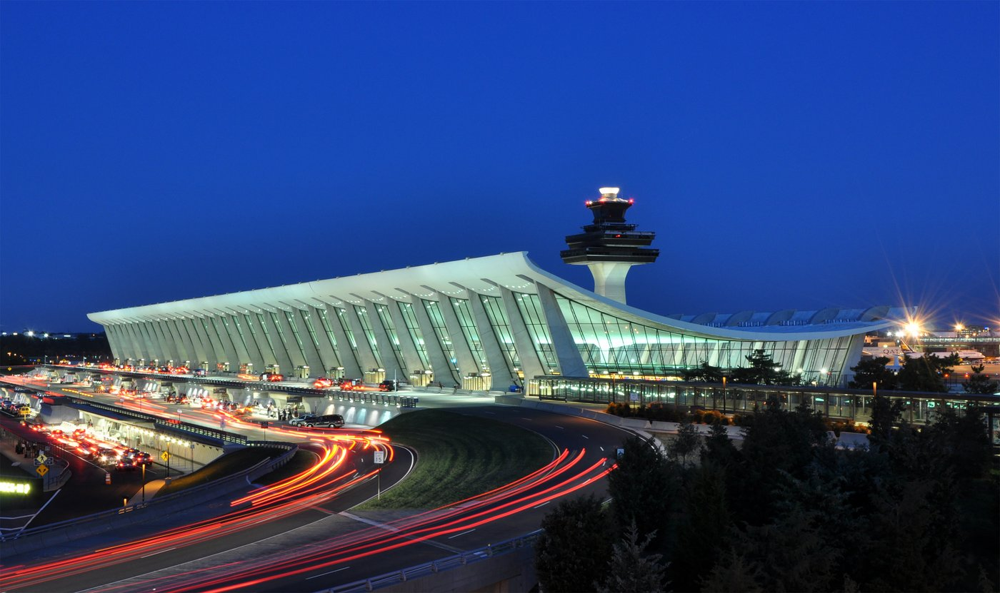
Visa adjudication. On the evidence above, the strongest available interdiction point, and the one where defensive economics were most favorable. Applications arrive in a controlled environment, on the defender's timeline, with a documentary record, no adversary time pressure, and no risk to the defender. The Commission's summary of the principle: "For terrorists, travel documents are as important as weapons." HPSCI's 2026 quantification: analyzing "characteristic travel documents and travel patterns could have allowed authorities to intercept 4 to 15 hijackers," and better use of information already in U.S. government databases "could have identified up to 3 hijackers."
Border entry. Forty-five contacts with immigration and customs officials over the life of the plot. HPSCI: "as many as 15 of the 19 hijackers were potentially vulnerable to interception by border authorities." Al Ghamdi's secondary referral was correct, the indicators were real, the inspector had discretion and used it to admit him — and nothing in the system connected that individual judgment to anything else, because there was no population-level view for it to connect to.
Watchlisting. Hazmi and Mihdhar were added to the State Department's TIPOFF watchlist on 24 August 2001, after an FBI analyst working the Kuala Lumpur material in her spare time finally grasped what a March 2000 cable meant. Eighteen days later, Nawaf al Hazmi walked through the checkpoint at Dulles and boarded American Airlines Flight 77. Adding an entity to a blocklist accomplishes nothing if the blocklist is not enforced at the point of transaction — a failure so common in enterprise security it barely registers as a finding.
Domestic indicators. Phoenix. Moussaoui. Unexplained funds. Flight training by people with no aviation background seeking large-jet type ratings. All documented, none aggregated.
Passenger prescreening. Here the record becomes genuinely remarkable, and this is the part most people do not know.
CAPPS was an FAA-approved automated system, run by the airlines, that scored each passenger profile to identify those who might pose a threat to civil aviation, and also selected some passengers at random.
Ten of the nineteen hijackers were flagged by CAPPS. Nine of the ten aboard the two American Airlines flights. All five of the Flight 77 team. Ahmad al Haznawi on Flight 93. Atta was selected in Portland; three of his Flight 11 team were selected in Boston.
The detection system worked. On the morning of the attack, it flagged more than half the attackers.
Now the consequence of being flagged. Under the rules in force, CAPPS selection meant the passenger's checked baggage was screened for explosives, or held off the aircraft until the passenger was confirmed aboard. That was the entire response. The Commission's staff statement puts it precisely: because the consequences of selection were limited to screening checked bags for explosives, "the application of CAPPS did not provide any defense against the weapons and tactics employed by the [hijackers]." Waleed al Shehri was selected and checked no bags, so his selection had no consequence whatsoever.
A detection with no matched response is not a control. It is telemetry. CAPPS was not a failed detection. It was a successful detection wired to a response designed for a different threat model — one that assumed the danger was a bomb in the hold, because the previous decade's aviation attacks had been bombs in the hold.
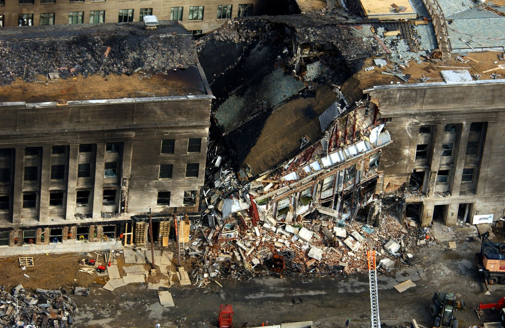
Checkpoint screening. Under the rules then in force, small knives and utility blades were permitted in the cabin. The screeners were not failing to enforce policy; they were enforcing it. At Dulles, the only one of the four departure checkpoints with video, most of the Flight 77 hijackers set off metal detector alarms, received additional scrutiny, and were permitted to board. The Commission cited an expert's assessment of screener performance as "marginal at best" and noted that passengers who alarmed the detectors should not have proceeded until the offending items were identified.
On-board security. The Common Strategy. Cockpit doors were not hardened. Crews were trained to a threat model that no longer described the threat.
The Dulles sequence
If you take one thing from this article, take this.
On the morning of September 11 at Washington Dulles, at the American Airlines Flight 77 counter, three independent detection mechanisms fired on the same group of people, and all three were correct.
The algorithm fired. Hani Hanjour, Khalid al Mihdhar, and Majed Moqed were flagged by CAPPS.
A human being fired. The Hazmi brothers were selected for additional scrutiny by the airline's customer service representative at check-in. The Commission records his reasoning: one of the brothers had no photo identification and could not understand English, and the agent "found both of the passengers to be suspicious." That is a frontline employee, unprompted, exercising exactly the judgment this industry spends a fortune trying to train.
The watchlist had fired, eighteen days earlier. Nawaf al Hazmi had been added to TIPOFF on 24 August.
All five Flight 77 hijackers were selected for scrutiny. A screener hand-checked Nawaf al Hazmi's baggage for explosive traces. Several of the men alarmed the metal detectors and were additionally screened.
And the Commission's finding on what came of all of it: "the only consequence of their selection was that their checked bags were held off the plane until it was confirmed that they had boarded the aircraft."
They boarded. Fifty-eight passengers, six crew, and one hundred twenty-five people at the Pentagon died.
This is not a story about detection failure. Every detection layer worked. The algorithm was right, the human was right, and the watchlist was right. The system took three true positives and processed all three through a response procedure that could not act on what they meant.
Ask yourself what happens in your environment when an algorithmic detection, an analyst's instinct, and a threat intelligence indicator all fire on the same entity in the same hour. Do those three signals reach the same person? Does anything in your tooling notice the coincidence? Or do they land in three queues, get three dispositions, and close?
VIII. What the counterfactual actually supports
Here is the disciplined version of "could it have been prevented," stated as claims of decreasing confidence.
High confidence. Friction was available and was not applied. Twenty-two of twenty-three visa applications approved with two interviews conducted. Forty-five immigration and customs contacts. Fourteen operatives sharing a detectable document-acquisition pattern. Ten of nineteen flagged by the prescreening system on the day itself. The Commission's finding that nothing the U.S. government did between 1998 and 2001 "disturbed or even delayed" the plot is a statement about the defender, not the adversary.
Moderate confidence. Specific interdictions were achievable. HPSCI's assessment that travel document and pattern analysis could have intercepted between four and fifteen hijackers is a considered congressional judgment drawn from the Commission's border work. The Commission's own view was that Hazmi and Mihdhar could have been detained on immigration violations or as material witnesses in the Cole case, and that "the simple fact of their detention could have derailed the plan."
Low confidence, and the Commission says so. That any single intervention would have stopped the attacks. The adversary was adaptive, and had already demonstrated willingness to reassign personnel, cancel components, and recruit replacements when operatives failed to obtain entry. Removing some operatives might have produced a smaller attack rather than no attack.
The honest synthesis: the plot was not undetectable. It was detected, repeatedly, by multiple independent systems, and never assembled. The failure was integrative, not observational.
IX. The method they published and nobody ran
Here is the part of the 9/11 Commission Report that security practitioners should be reading, and almost nobody does.
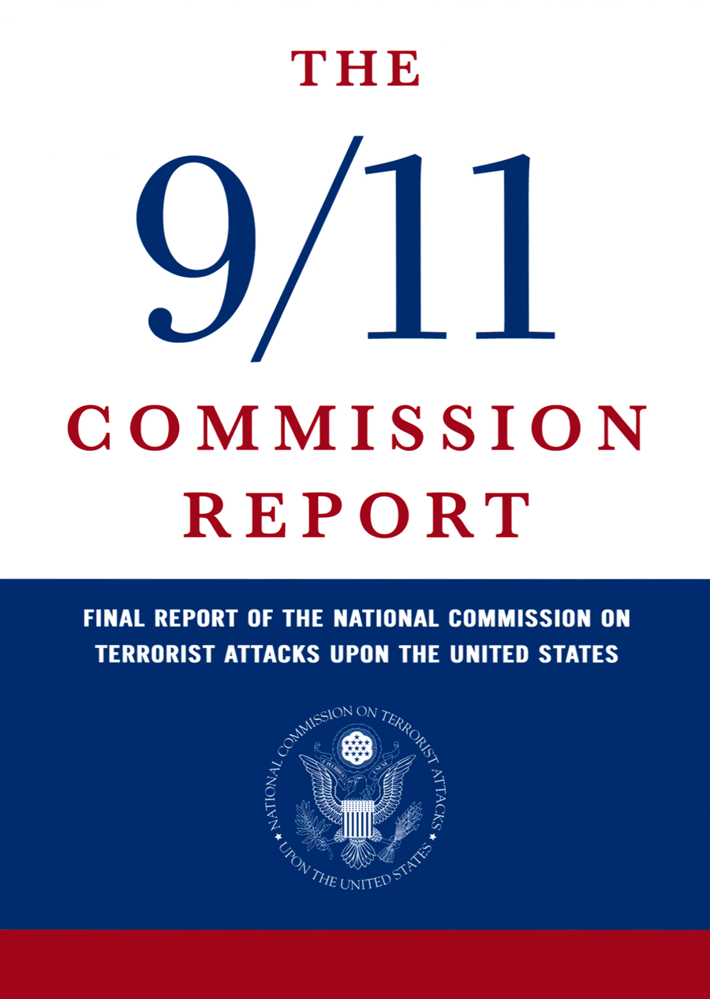
The Commission observed that since Pearl Harbor the intelligence community had spent generations developing rigorous methods for forestalling surprise attack. Those methods had been articulated many ways, but nearly all shared four elements:
"(1) think about how surprise attacks might be launched; (2) identify telltale indicators connected to the most dangerous possibilities; (3) where feasible, collect intelligence on these indicators; and (4) adopt defenses to deflect the most dangerous possibilities or at least trigger an earlier warning."
The Commission then walked each element and demonstrated none had been performed against al Qaeda.
On the first: "The CTC did not analyze how an aircraft, hijacked or explosives-laden, might be used as a weapon. It did not perform this kind of analysis from the enemy's perspective ('red team' analysis), even though suicide terrorism had become a principal tactic of Middle Eastern terrorists." Had they done so, the Commission believed, the analysis "would soon have spotlighted a critical constraint for the terrorists—finding a suicide operative able to fly large jet aircraft."
On the second: "The CTC did not develop a set of telltale indicators for this method of attack. For example, one such indicator might be the discovery of possible terrorists pursuing flight training to fly large jet aircraft, or seeking to buy advanced flight simulators."
On the third: no collection requirements were ever set against those indicators. Which is why, as the Commission put it, "the warning system was not looking for information such as the July 2001 FBI report of potential terrorist interest in various kinds of aircraft training in Arizona, or the August 2001 arrest of Zacarias Moussaoui because of his suspicious behavior in a Minnesota flight school. . . . Because the system was not tuned to comprehend the potential significance of this information, the news had no effect on warning."
And then the sentence that should be the epigraph of every detection engineering charter:
"The methods for detecting and then warning of surprise attack that the U.S. government had so painstakingly developed in the decades after Pearl Harbor did not fail; instead, they were not really tried."
That is a threat modeling methodology. Imagine the attack from the adversary's side and find their binding constraint. Derive the specific observable that would be present if the attack were underway. Confirm you are collecting it. Build the detection or the control.
Take your top three threat scenarios. For each, can you name the indicator, the data source, and the detection? If any of the three is blank, you are precisely where the Counterterrorist Center was in August 2001. You have imagined the attack and done nothing with the imagination.
The Commission was under no illusions about how hard this is to institutionalize. "Imagination is not a gift usually associated with bureaucracies," they wrote. "It is therefore crucial to find a way of routinizing, even bureaucratizing, the exercise of imagination." And on how organizations avoid it: "Government agencies also sometimes display a tendency to match capabilities to mission by defining away the hardest part of their job. They are often passive, accepting what are viewed as givens, including that efforts to identify and fix glaring vulnerabilities to dangerous threats would be too costly, too controversial, or too disruptive."
That is the risk acceptance process at most companies, described exactly, twenty-two years early.
X. What the evidence says about vigilance
This is where security writing usually goes soft, so let me be direct: most of what the industry believes about observational awareness is not supported, and the part that is supported is not the part people cite.
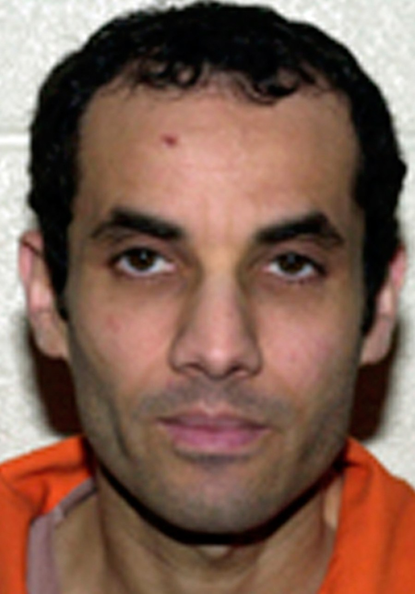
Start with the case everyone knows. On December 14, 1999, U.S. Customs inspector Diana Dean was working the last ferry of the day into Port Angeles, Washington. She stopped a man presenting as a Canadian citizen named Benni Noris. He said he was going to Seattle on business, which made little sense given the route. He could not say where he was staying. He spoke broken English while claiming Canadian nationality. He carried two Quebec driver's licences with the same date of birth and different names. He was fidgeting and sweating. Dean handed him a customs declaration partly as a stalling tactic so she could watch him longer, and later described him as acting "hinky." The trunk held roughly 130 pounds of explosive material. The driver was Ahmed Ressam, en route to bomb Los Angeles International Airport on New Year's Eve.
After 2001, TSA tried to industrialize that. The SPOT program, launched in 2007, eventually fielded around 3,000 behavior detection officers at 176 airports at a cost approaching a billion dollars, working from a checklist of behavioral indicators.
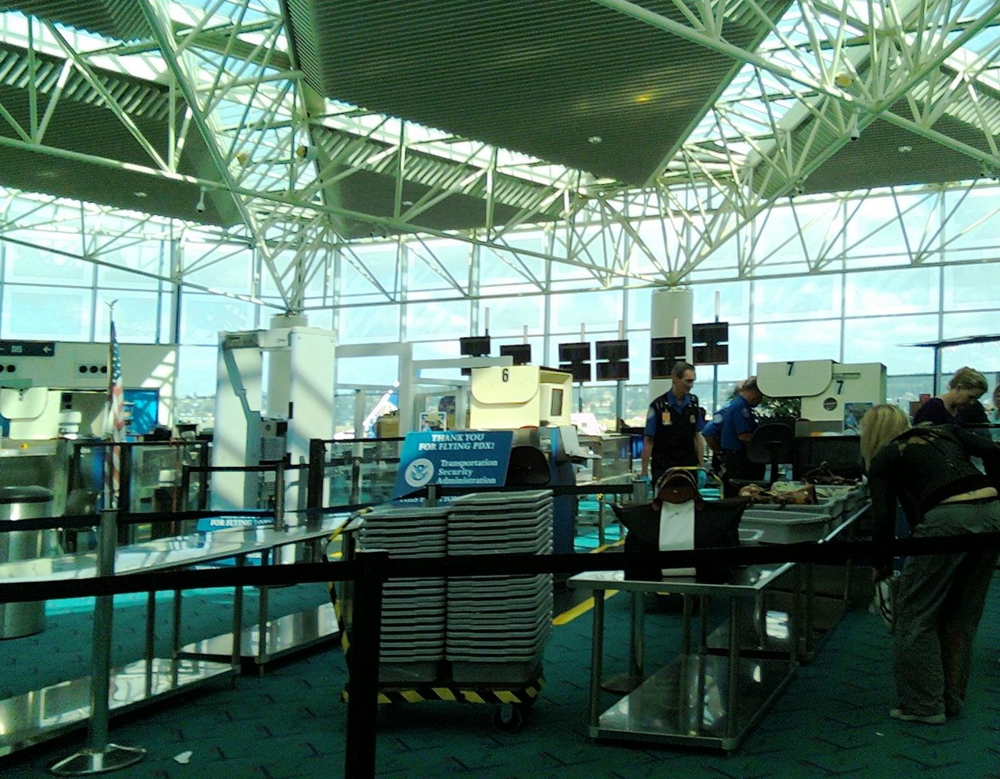
The Government Accountability Office reviewed it in November 2013 and found this:
"Available evidence does not support whether behavioral indicators, which are used in the Transportation Security Administration's (TSA) Screening of Passengers by Observation Techniques (SPOT) program, can be used to identify persons who may pose a risk to aviation security."
GAO had examined four meta-analyses covering more than 400 studies conducted over the previous sixty years on detecting deception from behavioral cues. The finding: "the ability of human observers to accurately identify deceptive behavior based on behavioral cues or indicators is the same as or slightly better than chance (54 percent)." Twenty-one of twenty-five behavior detection officers GAO interviewed said some indicators were subjective; TSA agreed. A 2017 follow-up found TSA lacked valid scientific evidence for 28 of its 36 indicators, and that of 178 supporting sources the agency submitted, three were sufficient.
So how do you reconcile Dean with a coin flip?
Read her account again. Dean did not detect deception from demeanor. She detected that the story did not make sense. The route was wrong for the stated destination. The itinerary could not be specified. The claimed nationality contradicted the observed language ability. The documents contradicted each other. The nervousness was corroborating evidence, not originating evidence.
That distinction is the whole lesson, and it maps onto a debate your team is already having. Detection built on verifiable inconsistency against a known-good baseline outperforms detection built on inferred intent. "This service account has never touched this subnet" is falsifiable, testable and tunable. "This looks suspicious" is neither, and unfalsifiable alerts are how you get alert fatigue and bias simultaneously.
There is one domain where public reporting has a solid empirical track record, and it is worth knowing precisely what it covers. The Mineta Transportation Institute, analyzing attacks on public surface transportation since 1970, found that staff and passengers have prevented more than 10% of all such attacks, rising above 14% in economically advanced countries. That finding is about reporting suspicious objects: a concrete physical anomaly against an obvious baseline, because bags do not normally sit alone on platforms. It is not about reporting people who seem suspicious.
RAND's September 2026 assessment points the same direction. The pre-attack behaviors with genuine predictive value are activities, not affect: creating attack plans, researching how to attack, seeking paramilitary training, accumulating weapons or bomb-making materials, probing or breaching potential sites. RAND also notes that most motivations for mass attacks have been personal rather than ideological, which should temper anyone's instinct to imagine the threat as exotic.
And then there is the cost side, which no honest article can omit.
On September 15, 2001, four days after the attacks, Balbir Singh Sodhi was shot five times and killed while planting flowers outside the gas station he owned in Mesa, Arizona. His killer reportedly said he wanted to go shoot some "towel-heads." He mistook Sodhi for an Arab Muslim because of his beard and turban. Sodhi was Sikh. FBI data show anti-Muslim hate crime incidents rose from 28 in 2000 to 481 in 2001, roughly a 1,600% increase. The Sikh Coalition documented more than 300 incidents of violence and discrimination against Sikh Americans in the first month alone. There was no separate FBI hate crime category for Sikhs until roughly fifteen years later; the victims were not even counted.
The population was told to be alert and given no usable definition of what to be alert for, and so it defaulted to appearance. That is the failure mode a well-designed reporting program exists to prevent, and it is the same failure mode GAO found that formal behavioral indicator programs never solved either.
There is a final piece, about what happens after a report is filed. A bipartisan Senate Permanent Subcommittee on Investigations study in 2012 reviewed thirteen months of DHS fusion center reporting and could "identify no reporting which uncovered a terrorist threat, nor . . . a contribution such fusion center reporting made to disrupt an active terrorist plot." That review covers 2009 and 2010 output, is now fourteen years old, was disputed by DHS, and fusion centers have evolved since. But the mechanism it exposed is timeless: people stop feeding a system that never acknowledges being fed.
XI. The month it worked
There is one documented period when the entire American counterterrorism system functioned as designed, and the Commission investigated why with unusual care. It is the most useful passage in the report and almost nobody cites it.
In the weeks before the millennium, "information about terrorism flowed widely and abundantly. The flow from the FBI was particularly remarkable because the FBI at other times shared almost no information." Intelligence reached "officials—local airport managers and local police departments—who had not seen such information before and would not see it again before 9/11, if then."
The Commission's explanation had three parts. Y2K had everyone on edge. Jordanian authorities arrested sixteen al Qaeda operatives. And Diana Dean caught Ressam at the border. Then the analytic point:
"These were not events whispered about in highly classified intelligence dailies or FBI interview memos. The information was in all major newspapers and highlighted in network television news. . . . FBI field offices around the country were swamped by calls from concerned citizens."
"While one factor was the preexistence of widespread concern about Y2K, another, at least equally important, was simply shared information. Everyone knew not only of an abstract threat but of at least one terrorist who had been arrested in the United States. Terrorism had a face—that of Ahmed Ressam—and Americans from Vermont to southern California went on the watch for his like."
And the contrast with the following summer:
"Between May 2001 and September 11, there was very little in newspapers or on television to heighten anyone's concern about terrorism. Front-page stories touching on the subject dealt with the windup of trials dealing with the East Africa embassy bombings and Ressam. All this reportage looked backward, describing problems satisfactorily resolved. . . . All the rest was secret."
Stop and appreciate what this is. It is a natural experiment. Same agencies, same people, same adversary, twenty months apart. In one period the system mobilized. In the other it did not, despite receiving considerably more warning. The variable was not the volume of intelligence. It was whether the threat was concrete, named, publicly visible and locally relevant, or abstract, classified and framed as somebody else's problem overseas.
Your organization will not act on "elevated ransomware risk in the sector." It will act on "here is the group, here is what they did to a company our size last month, here is what it looked like in their logs." Specificity is not communication polish. It is the mechanism by which warning becomes action, and the 9/11 record contains the controlled experiment that proves it.
XII. Ten principles the record will bear
Not inspirational. These are what the evidence in this article supports, and nothing more.
- Count load-bearing layers, not layers. Seven layers of aviation security: two structurally irrelevant to the threat, one wired to the wrong response, one enforcing a policy that permitted the weapons. Real depth was closer to one. Mark each layer of your defense-in-depth diagram with the specific threat it stops, cross out the ones that don't apply to your top scenario, and count what remains.
- A detection with no matched response is telemetry. CAPPS flagged ten of nineteen and held their luggage. Audit your high-value detections by asking what concretely happens when each fires, and whether that action addresses the threat the detection represents or the threat it represented when the playbook was written.
- Correlate across the set. Fourteen of nineteen new passports inside three weeks. Invisible per-record, screaming in aggregate. Build cohort analysis or accept that pattern-level adversary tradecraft passes through you unremarked.
- Enforce at the point of transaction. Hazmi was watchlisted on August 24 and boarded on September 11. An indicator sitting in a repository that no control consumes at the moment of decision has no defensive value.
- Interdict upstream, where the economics favor you. Visa adjudication was the strongest available layer because it ran on the defender's timeline, in a controlled environment, with no urgency. The same logic favors identity provisioning, code review, procurement and vendor onboarding over incident response.
- Preserve indicators through every summarization layer. The August 7 brief reached more people and contained less of what mattered. Portion-mark rather than strip. Classify the source, not the fact.
- Route by novelty, not just severity. The Mihdhar lead was tagged Routine and handed to an agent on his first counterterrorism case. Novel and uncertain cases belong with senior people regardless of what the score says.
- Anchor on baseline, report observables, never inferences. You cannot reliably read intent; the meta-analytic ceiling is 54%. You can reliably notice inconsistency with what you know to be normal. "Appeared nervous" is unfalsifiable and encodes the observer's priors. "Two licences, same date of birth, different names" is checkable. And every behavior on RAND's evidence-supported list describes something a person does, never what a person looks like — which is the difference between a program that works and one that produces a 1,600% spike in hate crimes.
- Make being wrong free, and close the loop. Minneapolis had an escalation path and declined to use it because the social cost was real and the benefit speculative. Fusion centers received thirteen months of reports and returned nothing identifiable. People stop escalating when escalation is punished, and stop reporting when reporting disappears into a void.
- Audit what you decommissioned. The CIA analyzed terrorist travel documents in the 1980s, built training material for border inspectors, and abandoned it in the early 1990s. Nobody recorded what that capability had been catching, so nobody noticed its absence for a decade. Every program you sunset should leave behind a written record of what it detected.
XIII. Thirty-five minutes, again
There is a version of this article that ends by saying the lessons have been learned. Some have. Biometric entry at air and sea ports, hardened cockpit doors, a federalized screening workforce, the National Counterterrorism Center, and no successful terrorist attack on a U.S. commercial flight that passed through TSA screening in twenty-five years. These are real achievements and it would be cheap to pretend otherwise.
But note what HPSCI reported eleven days ago about the biometric exit system the Commission recommended in 2004: after twenty-two years, four statutes and repeated executive direction, the United States "has not fully implemented a biometric exit screening system at any point of entry category."
And note the committee's description of the domestic threat now. Homegrown extremists "often do not exhibit those indicators, and their attacks may involve lawful activity . . . require minimal planning; and leave little to no warning."
That is the same structural problem, in a harder form. When every individual action is permitted and only the pattern is anomalous, per-event detection is worthless by construction. The only thing that works is a strong baseline and correlation across the set — the one capability that was missing in 2001, and the one the visa data, the travel patterns and the CAPPS flags all independently demanded.
The plot generated an enormous indicator surface. Twenty-three visa applications. Forty-five border contacts. Fourteen matching passport acquisitions. Ten prescreening flags. One alert customs inspector in Port Angeles two years earlier who proved the whole thing was detectable, and one alert ticket agent at Dulles who proved it again on the morning itself.
None of it was ever brought into one place.
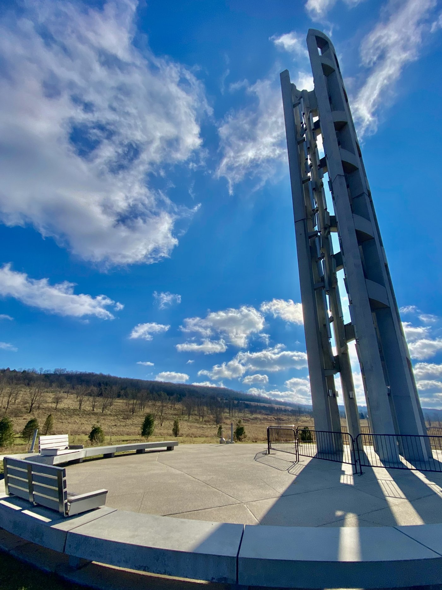
So return to Flight 93, because the passengers did what the entire national security apparatus failed to do that morning, and the reason they could is the argument of this article.
They received accurate, specific, timely information about what was happening elsewhere. They understood immediately that it applied to their own situation. They discarded the standing doctrine, which told them to comply and wait, because the new information made it obviously obsolete. They developed a plan appropriate to the actual threat rather than the assumed one. They chose their moment. They acted with no training, no authority and no time.
Thirty-five minutes, start to finish.
Everything the Commission recommended about information sharing is downstream of that. The decentralized network model, the portion-marking, the shift from need-to-know to need-to-share — all of it exists because of what forty people proved was possible when the information reached them.
The Commission was clear-eyed that none of it guarantees anything: "We do not believe it is possible to defeat all terrorist attacks against Americans, every time and everywhere." They were equally clear about the obligation: "The American people are entitled to expect their government to do its very best."
Twenty-five years on, a bipartisan committee of Congress has reported that our counterintelligence posture is eerily similar to our counterterrorism posture before the attacks. That intrusions into critical infrastructure went undetected for years. That the incentive structure still rewards prosecution after the damage over disruption before it. That agencies are again publishing internal products visible to their own leadership but not to their peers, a trend the committee describes as dampening cross-agency sharing and producing siloed thinking. That the most important data points about the next transformative threat sit inside private companies.
The 9/11 Commission's harshest sentence was not about incompetence. It was about neglect of a method that already existed: the techniques for detecting surprise attack "did not fail; instead, they were not really tried."
They are written down. They are four steps long. They are in the public domain. Nobody has to invent anything.
The question this anniversary poses to anyone responsible for defending a network is not whether we have learned the lessons of September 11. It is whether we are going to run the method this time, or wait for the next commission to observe, again, that we never really tried.
Sources
Primary sources for this article are works of the United States Government and in the public domain: the 9/11 Commission Report (2004); Commission Staff Statement No. 3, "The Aviation Security System and the 9/11 Attacks"; Staff Statement No. 16, "Outline of the 9/11 Plot"; the staff monograph 9/11 and Terrorist Travel (August 2004); GAO-13-239 and GAO-14-158T; the Senate Permanent Subcommittee on Investigations report on fusion centers (2012); NIST NCSTAR 1-7; National Park Service records of the Flight 93 phone calls; and the House Permanent Select Committee on Intelligence, Review of the 9/11 Commission Report (31 August 2026).
Secondary sources include Amy Zegart, Spying Blind (Princeton, 2007); the Mineta Transportation Institute; RAND; Human Rights Watch; and industry security operations surveys as cited.
Image credits: Cover and Tower of Voices photo — Andre Carrotflower / Wikimedia Commons, CC BY-SA 4.0 (cover cropped). WTC/Statue of Liberty photo — unattributed, Library of Congress 9/11 photograph collection, public domain. U.S. Capitol aerial — Carol M. Highsmith / Library of Congress, public domain. NORAD Cheyenne Mountain command post — Staff Sgt. Bob Simons / U.S. Department of Defense, public domain. George Tenet official portrait — Central Intelligence Agency, public domain. Zacarias Moussaoui booking photo — U.S. Department of Homeland Security, public domain. Washington Dulles main terminal — Joe Ravi / Wikimedia Commons, CC BY-SA 3.0. Pentagon aerial damage photo — U.S. Department of Defense (Tech. Sgt. Cedric H. Rudisill), public domain. 9/11 Commission Report cover — U.S. Government Printing Office, public domain. Airport checkpoint photo — M.O. Stevens / Wikimedia Commons, CC BY 3.0. Ahmed Ressam booking photo — Federal Bureau of Investigation, public domain. All used and cropped/resized under license; none endorse this article.
Share this one. Twenty-five years on, it's the version of the story most people haven't heard.